BBDS · 21 de octubre de 2026
Capturas finales
La pantalla completa, a 1280 × 800. Datos de demostración para que se vean todas las funciones sin depender de la red ni de la base local.
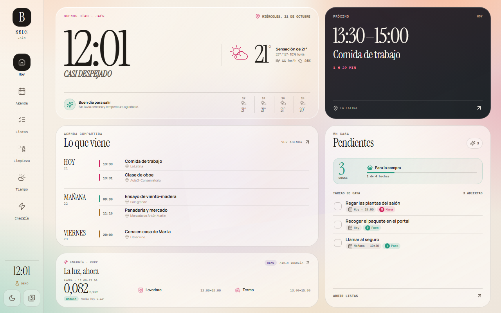
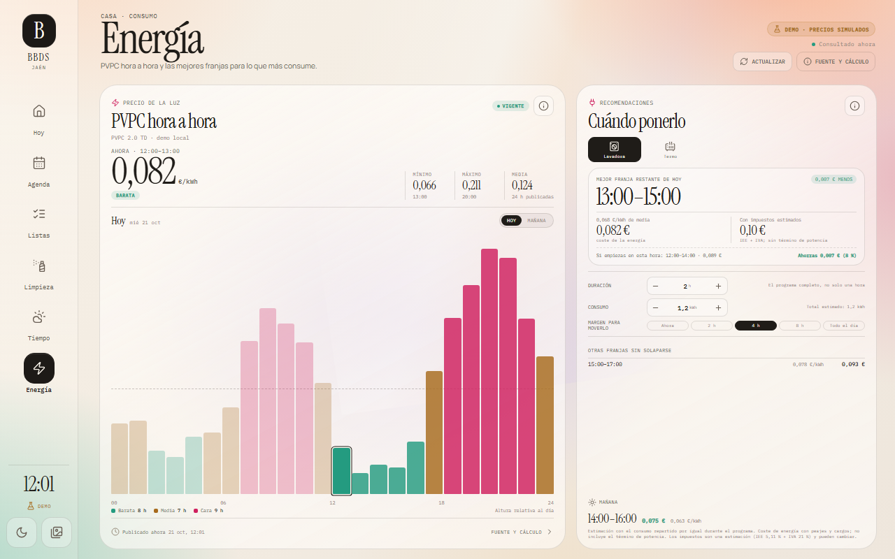
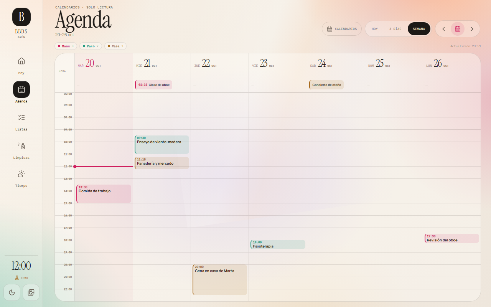
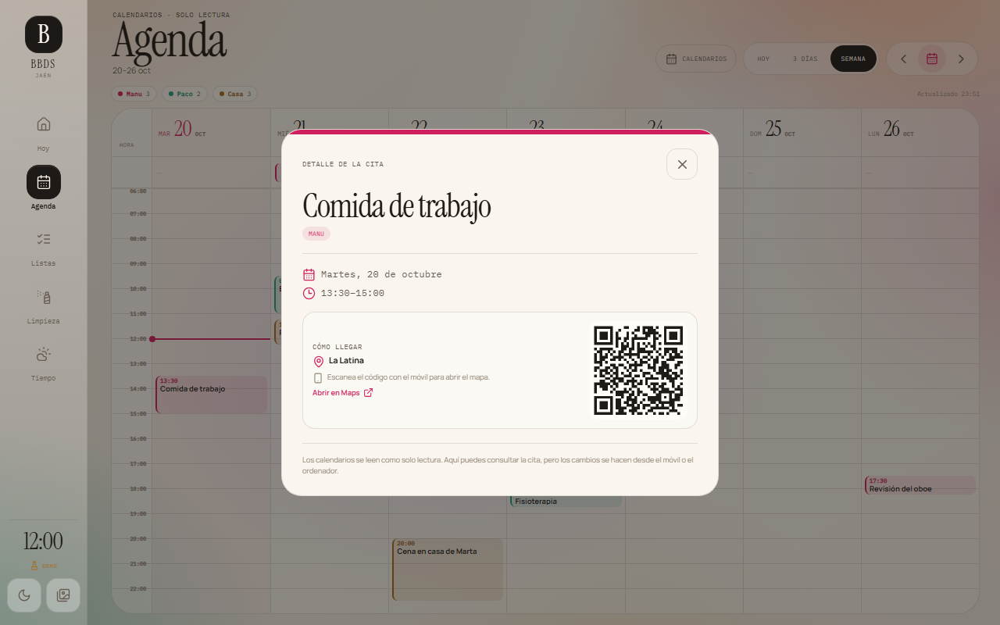
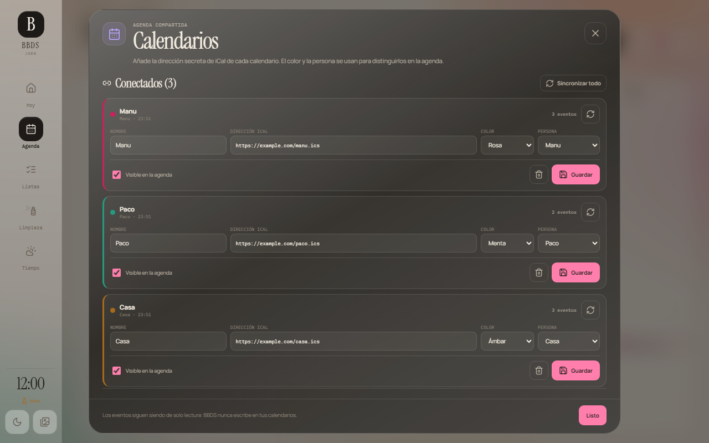
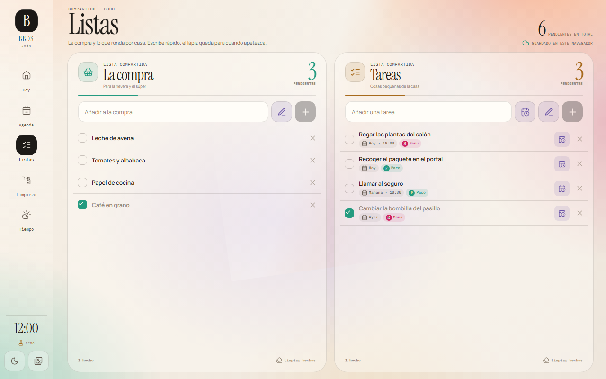
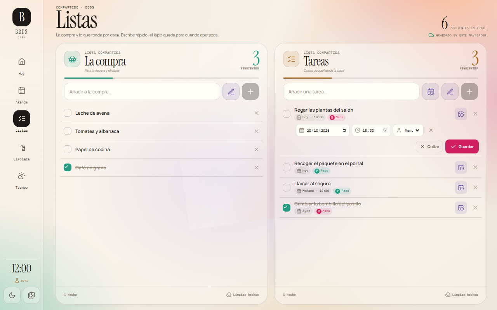
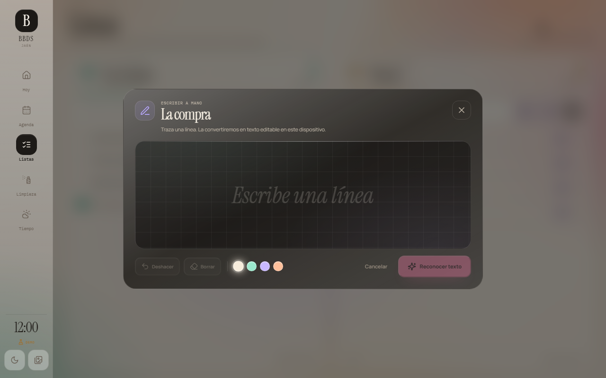
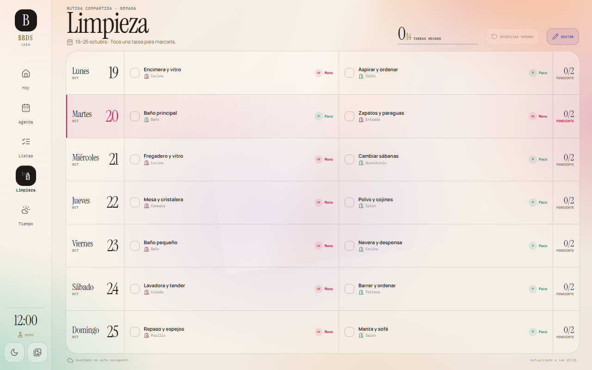
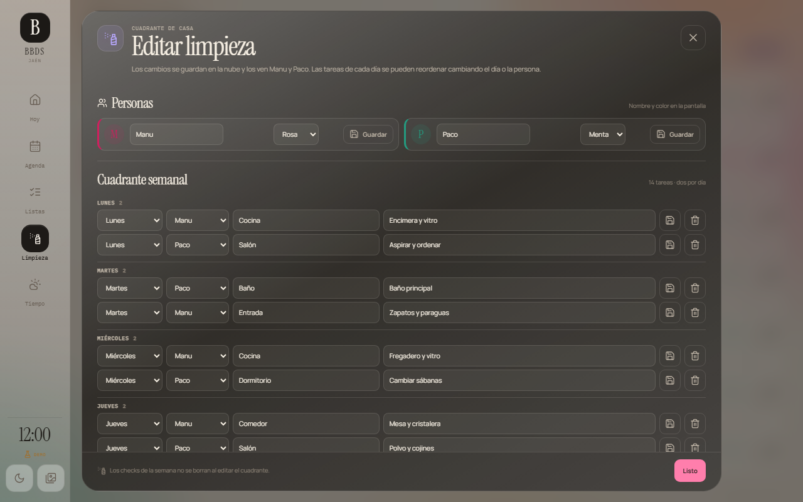
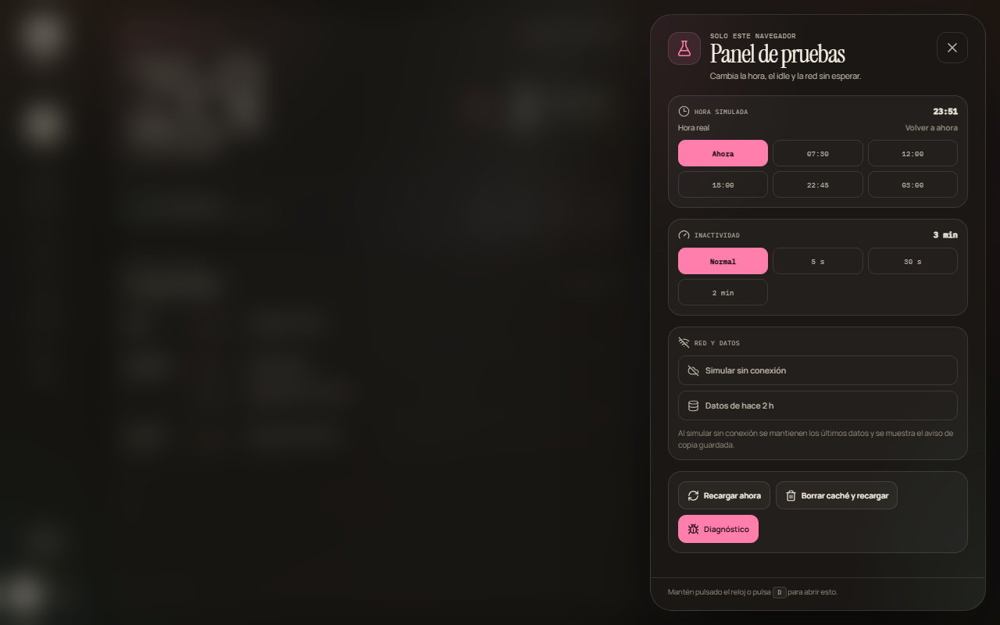
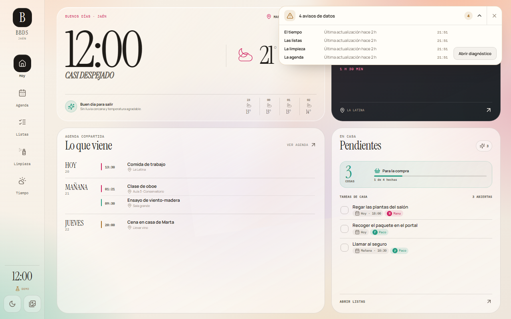
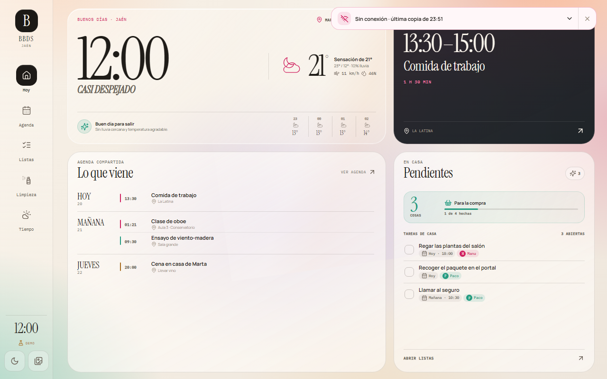
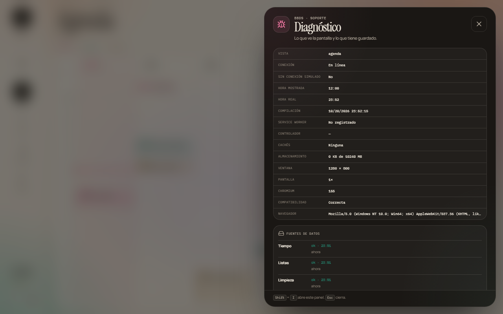
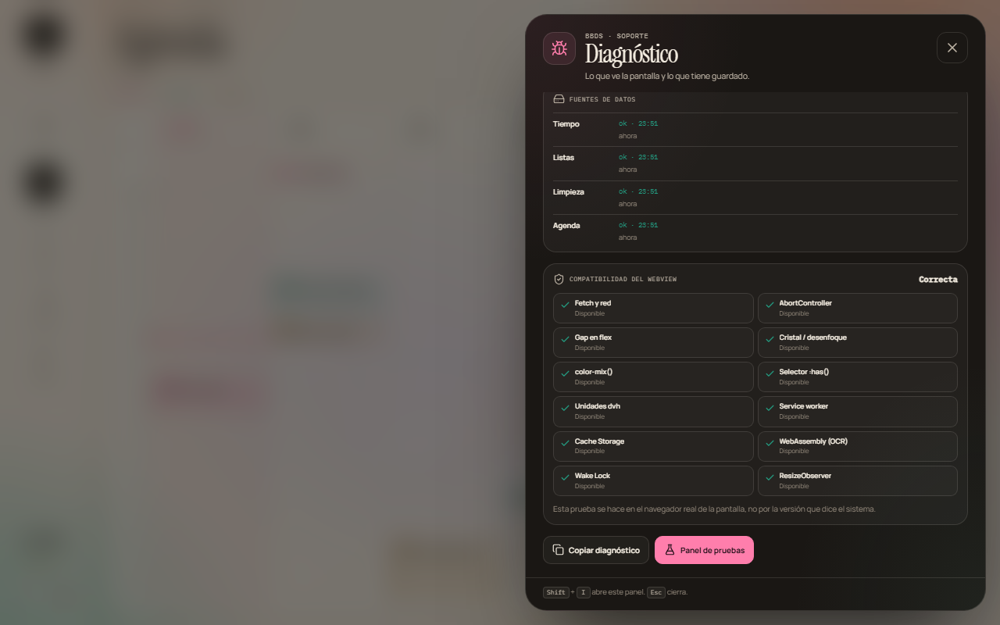
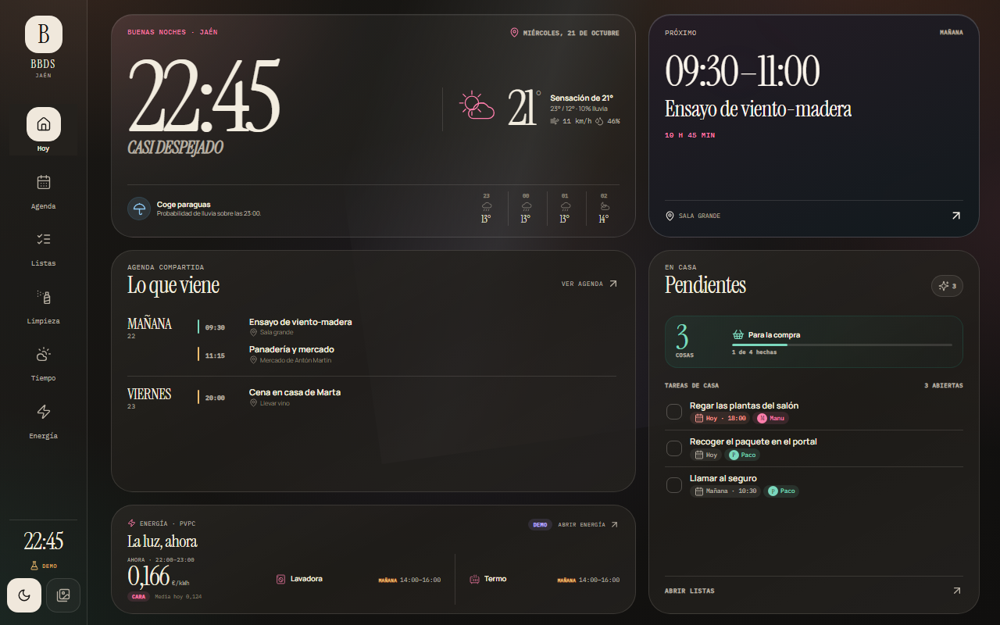